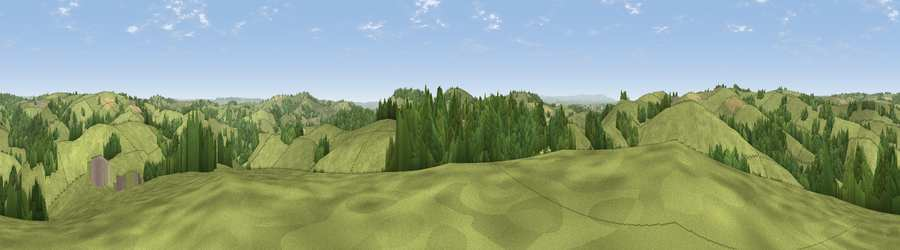

Viewpoint near Cadeleigh
#20155 in England · top 30% of its area beats it · near CadeleighWhere it is
The exact computed spot (SS 91475 08325). Click the marker for map links.
The view, rendered

A 360° render of this exact spot computed from the terrain model, tree cover and land cover — summer colours, afternoon light, calibrated against photographs of famous viewpoints. Real trees, hedges and buildings will differ in detail.
The panorama
Grey silhouette: terrain skyline in each direction (720 bearings, Earth curvature and refraction included). Dashed green: skyline with trees (+15 m) and buildings (+8 m) as obstacles. Blue strip: how far the ground is visible on each bearing.
Where the view opens
Wedge length = distance to the farthest visible ground on that bearing (vegetation-aware). Rings at 10, 25 and 50 km.
What fills the view
76% grassland · 21% woodland · 2% cropland ·
Angular shares of the visible panorama (visual magnitude), not map area. Landscape diversity 0.29 (0–1 Shannon).
Key numbers
More beautiful places nearby
The staircase of upgrades: each row has a higher view potential than everything closer. Driving times are estimates from straight-line distance, calibrated against real road routing — check an actual route before setting out.
| Place | Direction | Drive | Score |
|---|---|---|---|
| Viewpoint near Way Village | WNW · 2 km | ~5 min | 61.0 |
| Viewpoint near Way Village | WNW · 2 km | ~6 min | 62.2 |
| Viewpoint near Cadeleigh | NE · 3 km | ~7 min | 66.7 |
| Cadbury Castle | S · 3 km | ~7 min | 73.7 |
| Fursdon Hill | SSE · 3 km | ~8 min | 76.2 |
| Raddon Hills | SSW · 5 km | ~12 min | 78.2 |
| Viewpoint near Stockleigh Pomeroy | SSW · 5 km | ~12 min | 78.9 |
| Viewpoint near Whitestone | SSW · 14 km | ~26 min | 79.8 |
50.86421, -3.54348 · source: screening · position refined by local search. Computed location — check access rights before visiting.